Dark Tree toolset · SOP · Version 1.4
GPU Remesh
Isotropic triangle remeshing on the GPU. Keeps UVs, normals, materials and hard edges.
- Node type
darktree::gpuremesh::1.4- Tab menu
- Dark Tree > GPU Remesh
- Input
- Polygons: triangles, quads, n-gons. Normals optional.
- Output
- Triangles
- Requires
- Houdini 21.0 or 22.0, a GPU that Houdini uses for OpenCL
Public (L1) · Source: the GPU Remesh 1.4 asset and its example scene, made for public release.
Overview
Target Size sets the edge length of the output. The other parameters rarely need changing.
500,000 triangles in 0.47 s, against 9.7 s for the Remesh SOP (Performance).
Kept from the input:
- UV seams and island shapes
- Hard edges, from vertex normals, an edge group or an angle
- Material borders, piece borders (
name) and open borders - All attributes, point groups and primitive groups
Works in compiled blocks. Can remesh a group only.
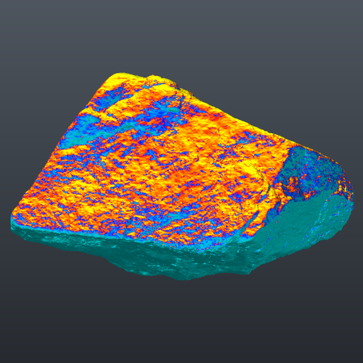
InputRaw scan, 999,994 triangles
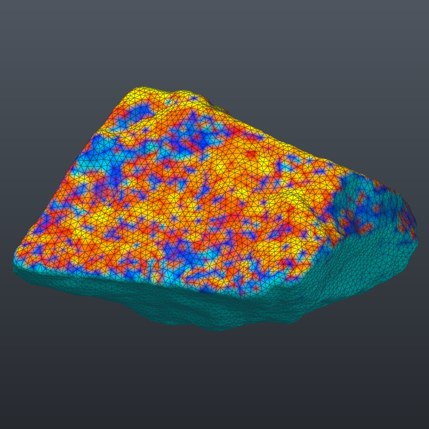
Target Size 0.02515,838 triangles in 1.1 s
Cd) is kept.For quads, use Quad Remesh. For a size that follows curvature, use Remesh in adaptive mode. For the lowest polygon count, use PolyReduce.
Install
- Copy
otls/GPU_Remesh.hdato theotlsfolder of your Houdini preferences, for exampleDocuments\houdini21.0\otlsorDocuments\houdini22.0\otls. Restart Houdini. - Tab > Dark Tree > GPU Remesh.
- Start with Target Size at 1/50 to 1/100 of the object size, then lower it.
- Hard-surface model without vertex normals: set Feature Angle to about 30.
Example scene
example/GPU_Remesh_examples.hip has one object per example. Display one at a time. The scene loads the asset from the otls folder of the package.
| Object | Shows |
|---|---|
ex0_speed_comparison | GPU Remesh, Labs Fast Remesh and Remesh on one model, through a Switch. Needs SideFX Labs. |
ex1_scan_reduction | A one-million-triangle scan reduced to a light mesh. Collapse Rounds 16. |
ex2_uv_mapped_model | A head with UVs and four materials. Seam Attributes, Border Attributes. |
ex3_hard_surface | A machined part. Feature Angle and cusped normals give the same result. |
ex4_cloth_panel_with_logo | A garment panel. The logo outline is a Hard Edges Group. |
ex5_fractured_pieces | A wall in 100 pieces. Group remeshes the breaks only. |
ex6_lock_outline_pts | A panel outline with a point every 0.01. Shape Tolerance 0 keeps all of them. |
Parameters
| Parameter | Name | Default | Purpose |
|---|---|---|---|
| Group | group | – | Primitives to remesh. Empty: all. |
| Hard Edges Group | hard_edges | – | Edges to keep, with their points. |
| Seam Attributes | seamattribs | uv* N | Vertex attributes whose seams are kept. |
| Border Attributes | primseams | shop_materialpath name | Primitive attributes whose borders are kept. |
| Feature Angle | featureangle | 0 (off) | Keeps edges sharper than this angle. |
| Iterations | iterations | 10 | Remeshing passes. |
| Smoothing | smoothing | 0.8 | Point relaxation per pass. |
| Collapse Rounds | rc | 10 | How much one pass can decimate. |
| Target Size | targetsize | 0.02 | Edge length of the output. |
| Seam Tolerance | seamtol | 0.001 | Closer values count as equal. |
| Shape Tolerance | ftol | 0.1 | How far feature lines can move. |
| Max Triangles | maxtris | 10,000,000 | Safety limit on the output size. |
Group
groupSame field as in the Remesh SOP: group names, primitive numbers, patterns such as @name=wall*, or a viewport selection.
Points shared with the rest of the mesh stay in place. The neighbour polygons receive the new border points, so the mesh stays closed.
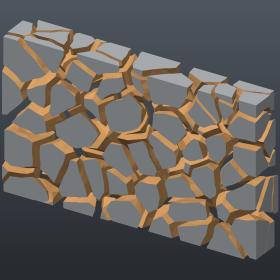
Group insideThe breaks, in orange.
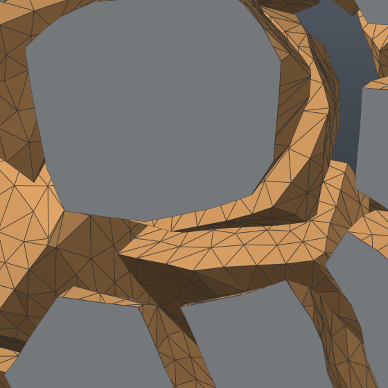
Input
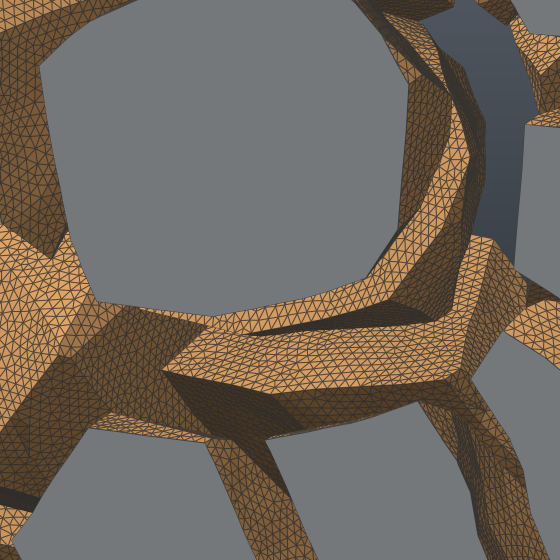
Output, Target Size 0.01Grey faces unchanged.
Hard Edges Group
hard_edgesAn edge group to keep. * takes every edge of the input polygons, as in the Remesh SOP.
The input points of these edges are always kept, whatever the Shape Tolerance. Edges longer than Target Size are still split.
Inputabseams in orange, made by the Boolean.
abseamsClean outline.
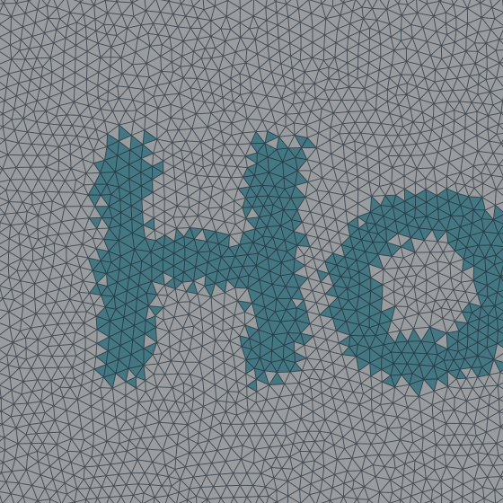
EmptyTriangles cross the outline.
- Use it for lines that no attribute and no angle can find, or when Feature Angle takes too many or too few edges.
Seam Attributes
seamattribsVertex attributes whose seams are kept. The default, uv* N, keeps the UV island outlines and the cusps of the normals.
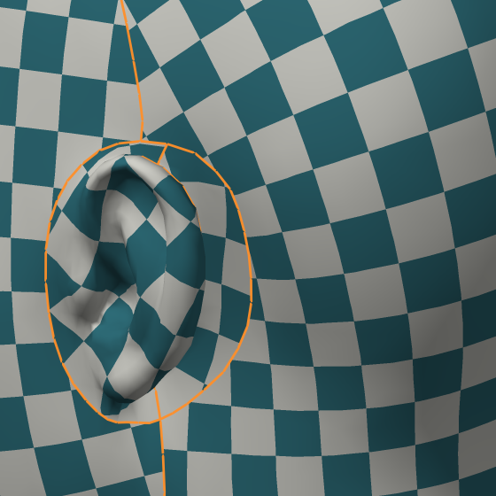
InputUV seams in orange.
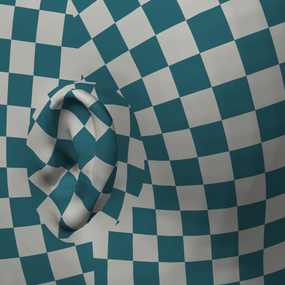
uv* N (default)Checker intact.
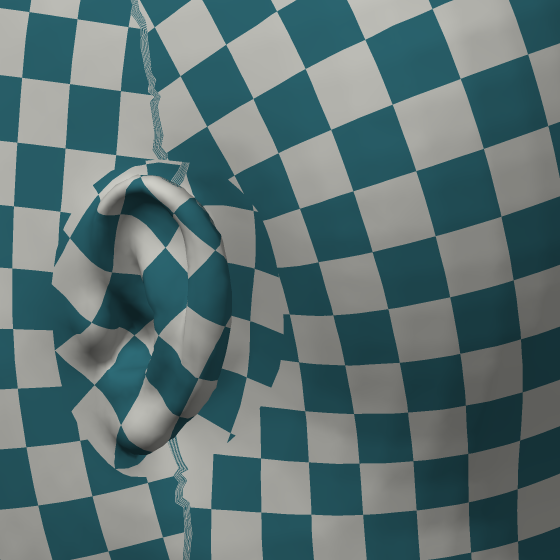
EmptySmeared along the seams.
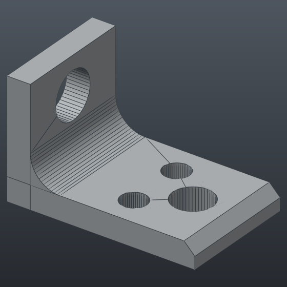
InputCusped vertex normals.
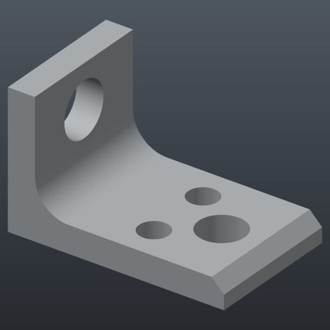
NSame shading.
EmptyRagged hard edges.
N.- Add attributes with sharp borders, for example
uv* N Cdfor a vertex colour painted per face. - Remove
Nif the normals are faceted: every edge would be a seam. - Hard edges need vertex normals. Point normals have no seams.
Border Attributes
primseamsPrimitive attributes whose borders are kept. The default keeps the borders between materials and between named pieces.
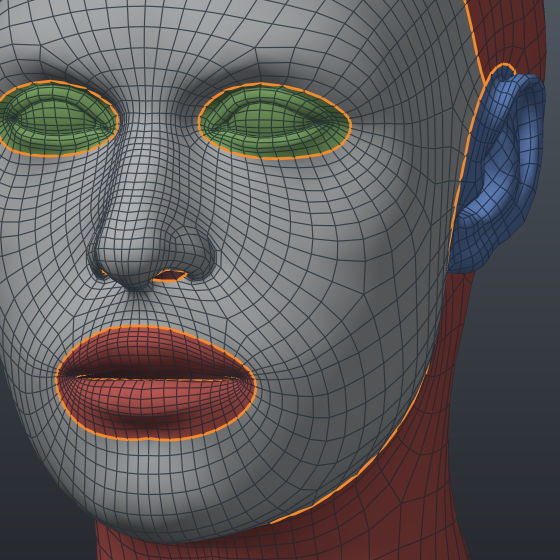
InputMaterial borders in orange.
DefaultClean borders.
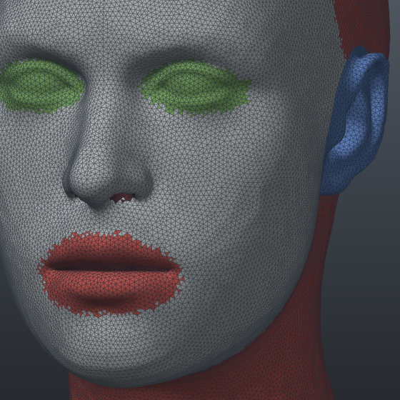
EmptyJagged borders.
shop_materialpath.- Add any zone or cluster ID. Remove attributes whose borders do not matter: the triangles get more regular.
Feature Angle
featureangleKeeps the edges where the surface turns by more than this angle. 0 turns it off. For hard-surface models without vertex normals.
At 0, edges near 90° already hold, but chamfers do not.
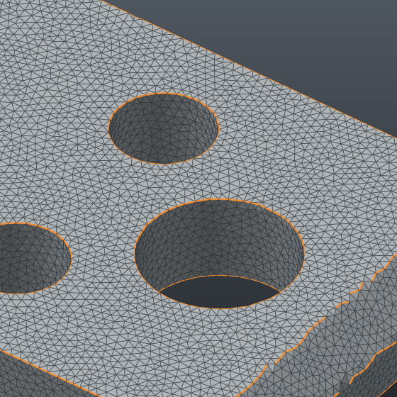
0The 45° chamfer, bottom right, is ragged.
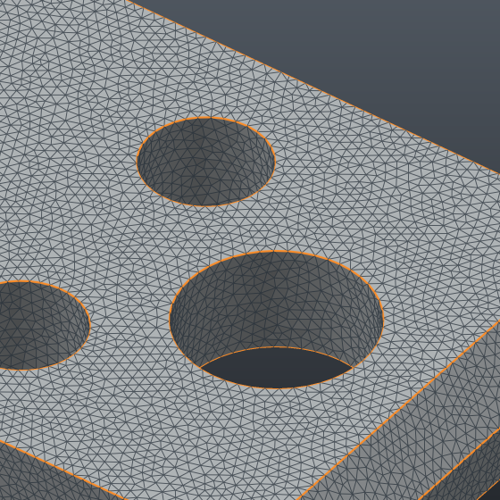
30Every edge above 30° is clean.
- Stay above the facet angle of the round parts. A 48-sided cylinder has 7.5° between facets.
- Below about 20°, organic or noisy surfaces keep their input edges.
- Leave it at 0 if the input has cusped vertex normals.
Meshing
Iterations
iterationsRemeshing passes. 10 suits most inputs.
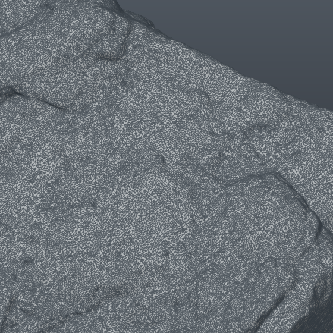
1447,246 triangles
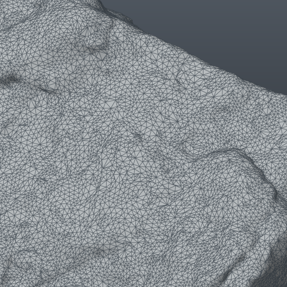
387,266 triangles

10 (default)15,838 triangles
- Fewer passes save little: 0.15 s at 3, 0.17 s at 10 on example 0.
- Uneven triangles left on a dense input: raise Collapse Rounds first.
Smoothing
smoothingPoint relaxation per pass. 0: none. 1: each point moves to the centre of its neighbours. The points stay on the input surface, so the shape does not shrink.
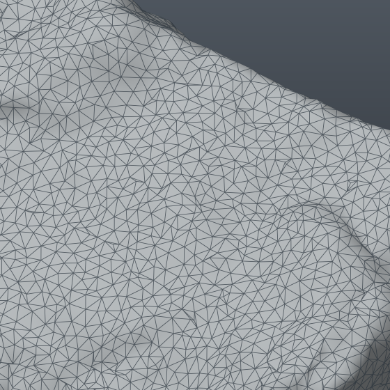
016,304 triangles, irregular

0.8 (default)15,838 triangles
- Keep the default.
Collapse Rounds
rcHow much one pass can decimate. Raise it when a very dense input keeps patches of small triangles.
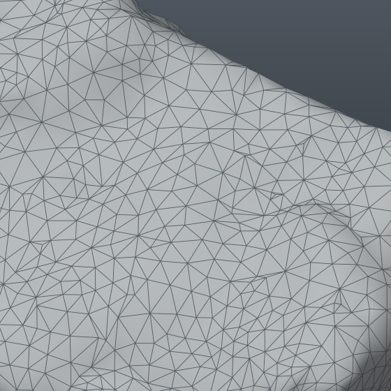
10 (default)5,646 triangles, uneven
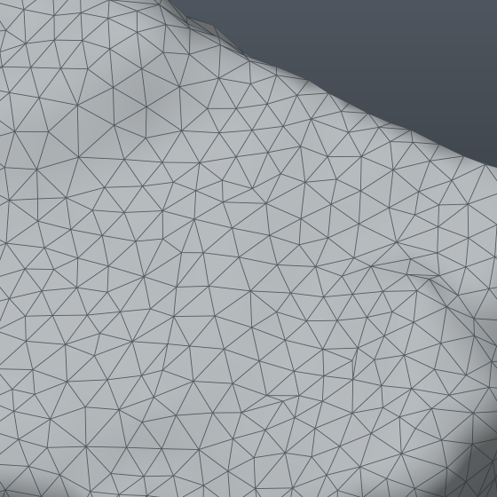
163,990 triangles, even
- Use 16 when the output has more than 50 times fewer triangles than the input. 32 does no better.
Element Sizing
Target Size
targetsizeEdge length of the output. Sets the density, the cook time and the GPU memory.

0.053,990 triangles
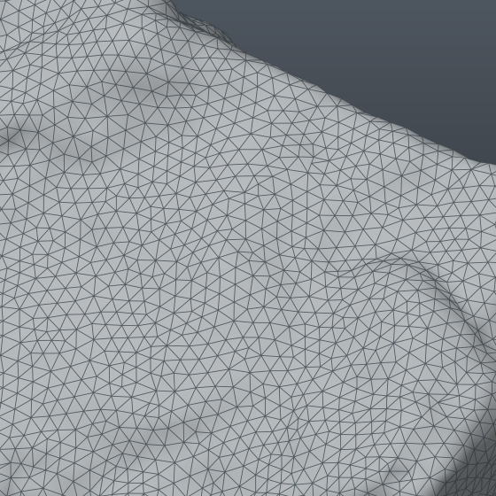
0.02515,838 triangles
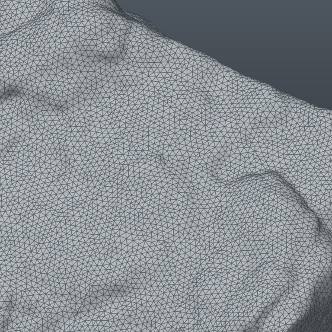
0.012564,142 triangles
- Below the edge length of the input, you get more triangles but no more detail.
- A 1-unit cube at 0.001 asks for 14 million triangles, above Max Triangles.
Tolerances
Seam Tolerance
seamtolAttribute values closer than this count as equal. Raise it when noise in an attribute makes false seams.
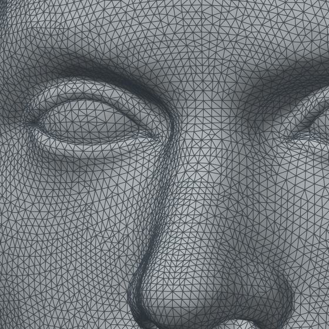
0.001 (default)112,239 triangles. The input edges show.
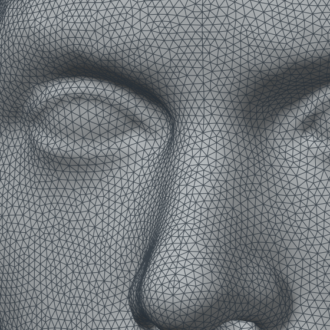
0.02107,310 triangles. Even.
- Lower it if a real seam has nearly the same values on both sides.
Shape Tolerance
ftolHow far feature lines (seams, borders, angle edges) can move to space their points evenly. It does not apply to the Hard Edges Group.
At 0, every input point of these lines is kept, as in the Remesh SOP. The triangles between them are chosen as by Divide with Avoid Small Angles.
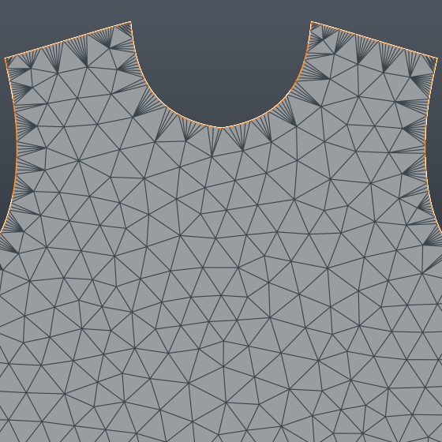
01,234 triangles. Every outline point kept.
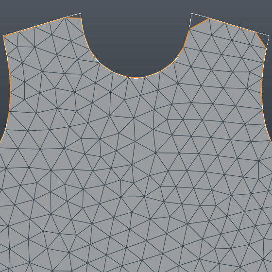
0.1 (default)769 triangles
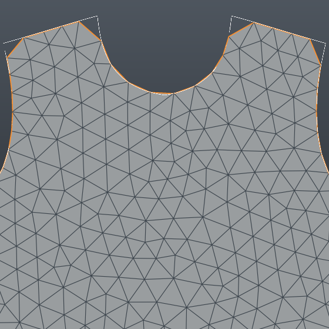
1756 triangles. Corners cut.
- Raise it to about 0.3 if small triangles line the seams.
- Lower it for outlines that must match exactly.
Max Triangles
maxtrisSafety limit. The node estimates the output from the surface area and Target Size. Above the limit, it stops with an error before it uses GPU memory.
- Count about 0.5 GB of GPU memory per million triangles. The default needs about 5 GB.
- Lower it on a smaller card, or when another application uses the GPU.
- 25 million input triangles reach the default at any Target Size.
Performance
| Output triangles | GPU Remesh | Labs Fast Remesh | Remesh |
|---|---|---|---|
| 12,000 | 0.05 s | 0.14 s | 0.13 s |
| 75,000 | 0.09 s | 0.41 s | 0.96 s |
| 500,000 | 0.47 s | 1.9 s | 9.7 s |
| 3 million | 3.1 s | 8.8 s | 57 s |
| 12 million | 14 s | 34 s | 4 min 46 s |
- Template Head (5,292 quads), NVIDIA GeForce RTX 5070, AMD Threadripper PRO 5945WX. Median of 3 to 7 cooks.
- GPU Remesh and Remesh at their defaults. Labs Fast Remesh with the Remesh settings (2 iterations, smoothing 0.1) and Target Bucket Size 55.
- The 12 million row needs Max Triangles above 13 million.
- The first cook of a session compiles the OpenCL program.
- Many pieces: wire them all into one node. A loop that cooks one piece at a time pays a fixed cost per piece.
- Example 0 runs the comparison on your machine.
Troubleshooting
| Symptom | Fix |
|---|---|
| Texture smeared along the UV seams, or ragged hard edges. | Restore Seam Attributes to uv* N. Hard edges need vertex normals. |
| Ragged or rounded chamfers. | Feature Angle about 30, or a Hard Edges Group. |
| The input edges show in the output. | Too many edges are kept. Raise Feature Angle or set it to 0, remove N if the normals are faceted, or raise Seam Tolerance. |
| Small triangles along the seams or borders. | Shape Tolerance about 0.3. |
| Jagged border between two materials. | Add the attribute to Border Attributes. |
| Patches of small triangles after a large reduction. | Collapse Rounds 16. |
| Warning “'…' is not a valid group”. | Correct or clear Group. |
| Empty output, warning “The input has no polygon to remesh”. | Unpack or convert the input to polygons. |
| Error “This remesh needs room for about … triangles”. | Raise Target Size, or Max Triangles if the GPU has the memory. |
| Very long cook, or an OpenCL error. | The job is too large for the GPU. Raise Target Size, lower Max Triangles, close other GPU applications. |
| Slow on many small pieces. | One node for all the pieces, outside any loop. |